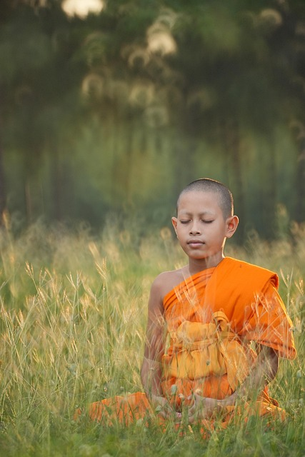

welcome
Yoga is an ancient practice that originated in India over 5,000 years ago. Rooted in spiritual traditions, it began as a way to connect the body, mind, and spirit through meditation, breath control, and ethical living. The earliest references to yoga are found in the Vedas, where it was closely tied to ritual and spiritual discipline. Over time
Yoga is an ancient practice that originated in India over 5,000 years ago. Rooted in spiritual traditions, it began as a way to connect the body, mind, and spirit through meditation, breath control,
practice make best
